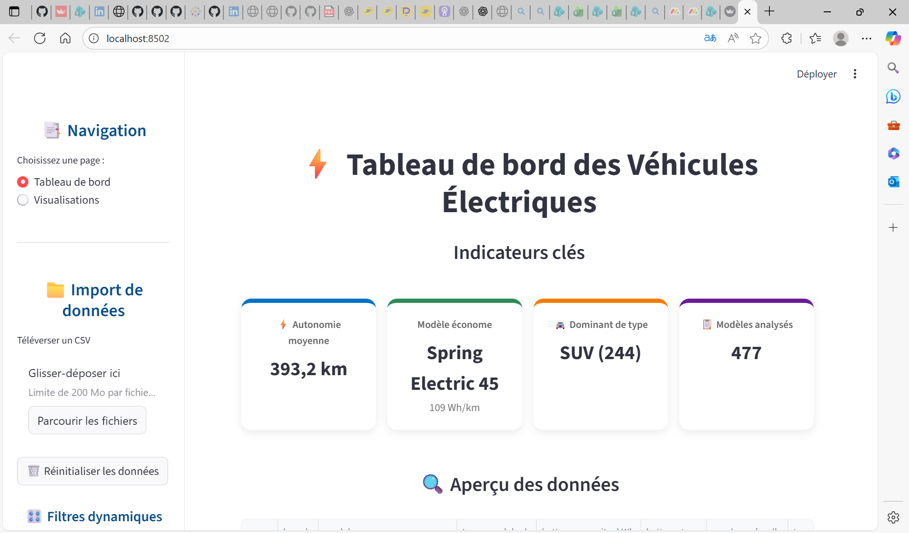
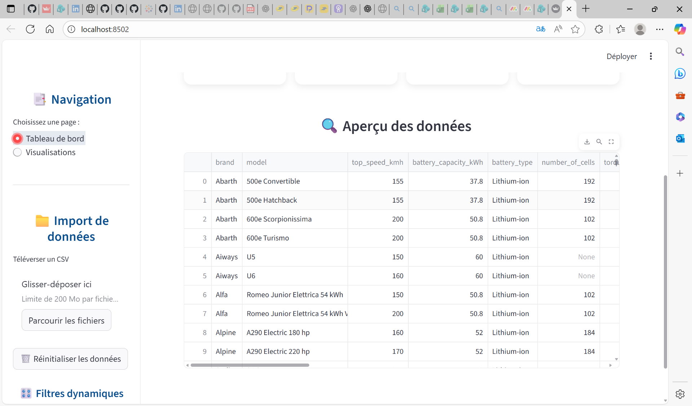
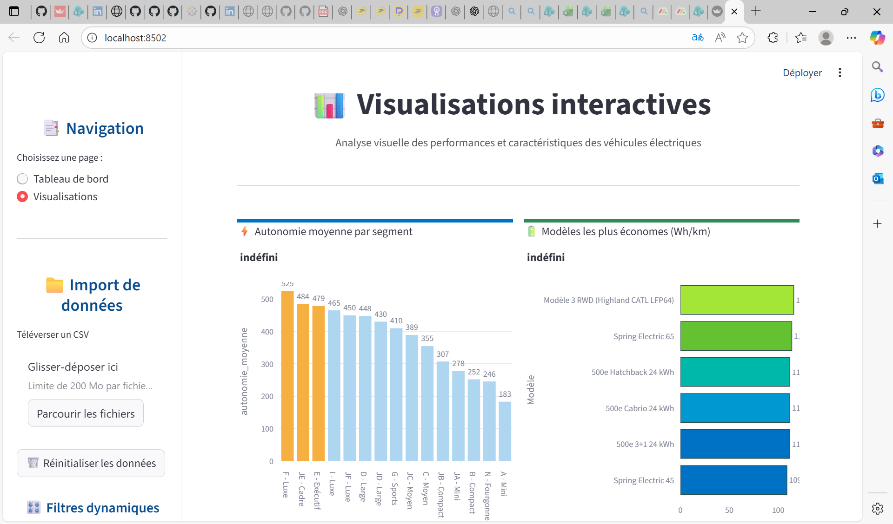
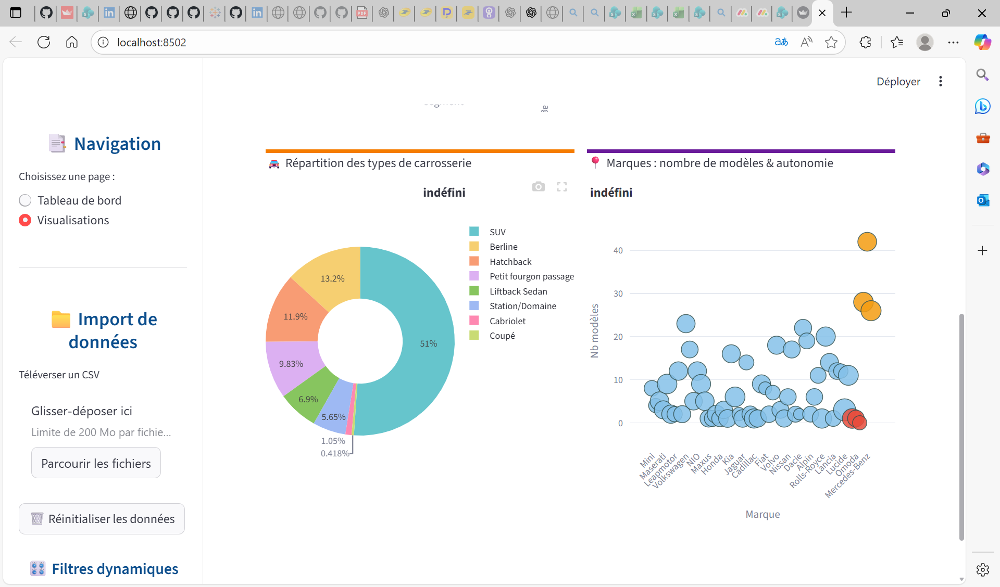

Application – Analyse des Véhicules Électriques

🎯 Objectif :
Fournir une application simple et intuitive pour analyser les caractéristiques de centaines
de modèles de véhicules électriques : autonomie, efficacité, types dominants, marques,
batterie et performances.
🚀 Particularités de l'application :
✔ Interface interactive construite avec Streamlit
✔ Filtrage dynamique des modèles (marques, types, carrosseries)
✔ KPIs calculés à la volée (autonomie, efficacité, modèles uniques)
✔ Visualisations interactives avec Plotly
✔ Utilisation de DuckDB pour une gestion rapide du dataset
✔ Structure type “true dashboard” avec cartes, graphiques, et tableaux
📊 Indicateurs clés :
- Autonomie moyenne des véhicules
- Modèle le plus économe (Wh/km)
- Type de véhicule dominant (SUV, berline, etc.)
- Nombre total de modèles analysés
- Répartition des véhicules par segment
- Marques les plus représentées
- Efficacité énergétique moyenne
🛠️ Technologies utilisées :
Python (Pandas, DuckDB), Streamlit, Plotly Express, HTML/CSS custom,
Data Cleaning & Aggregation.
📸 Aperçu du Dashboard


